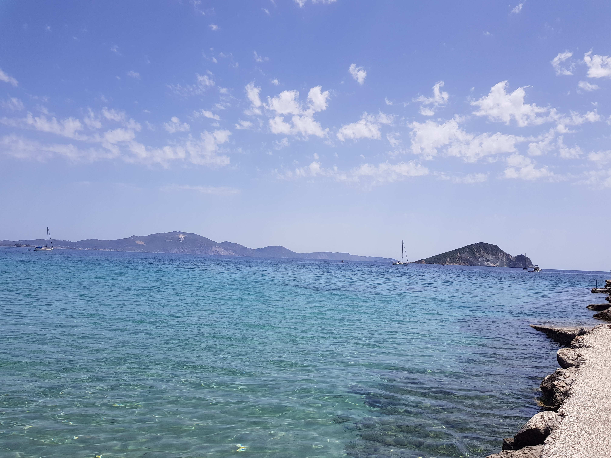
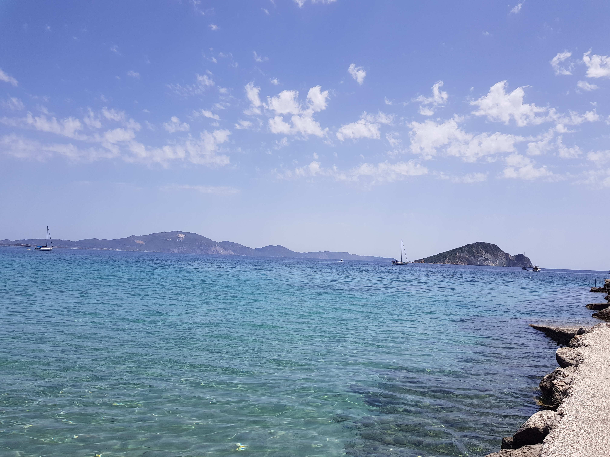

Keri
Dit stond niet op ons lijstje op te bezoeken, maar we gingen er spontaan heen. Op de terug weg vanuit het restaurant Keri Lighthouse met het mooie uitzicht, kwamen we een bord tegen waar "Keri" op stond. Er stond voor de rest van die dag niet zoveel meer op de planning dus we besloten om er naartoe te rijden. Eenmaal aangekomen kwamen we bij een heel schattig stadje aan zee. Het had een paar restaurantjes aan de boulevard en een strandje waar een paar mensen aan het zwemmen waren. We besloten op bij een tentje een drankje te gaan doen, maar ik een lekkere aardbeien smoothie had genomen.
Daarna zijn we verder gelopen naar het kleine haventje, waar heel veel vissersboten lagen. Dit was echt een leuk plaatje, daarom hebben we er ook een paar fotos gemaakt. Het zag er daar echt heel leuk uit en het is juist leuk dat je er zo op een spontane manier komt, ander had je het waarschijnlijk nooit ontdekt. Er stond ook een mini motor langs de weg van de haven, waar ik van mijn vader perse op moest gaan zitten omdat hij een foto van mij wilde maken.
De fotos zijn wel echt heel leuk geworden en het was zeker een heel mooi plekje, het plaatsje Keri.

 
